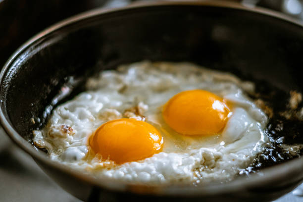

The Perfect Fried Egg
Home

The humble fried egg is, from the perspective of the ingredients and tools required, about as simple as a recipe can be. A fried egg trades instead upon the execution of the cook, and it requires
one to be perceptive and alert. The perfect egg (citation needed) has solidified and crisped whites, along with a yolk that has thickened, but runs slowly when pierced.
The difference between this renaissance ideal of a frieg egg and a fully scrambled yolk or a watery mess is about thirty seconds in the pan. The window of time that stands between a good fried egg and a perfect one is smaller still.
Practice often - and be mindful of what you are seeing, hearing, and smelling as you do. We cook with our senses - the mechanical actions we take can only be as good as the judgements they were informed by. The quality of these judgements, or what an experienced cook might call intuitions, can be improved with practice.
In comparing our judgements -
"The white is still pretty clear and slimy in some places (observation) but I think it will firm up (judgement) when I take it off the heat (proposed action)."
with the results
"The white is still slimy on top and the yolk is watery. (feedback / result of task) I must have taken the egg out too soon. (recalibrated judgement based on feedback)
We can train our ability to make high quality judgements that will eventually generalize into a solid cook's intuition.
In this way - the humble fried egg is an exercise in mindfulness, and one that helps us to anchor ourselves more closely with reality. As well - I believe that this process of examining our observations, our judgements, our actions, and our results is universal. I would like to recall a Quora post that I once read, in which a man compared the difficulty of learning to skateboard - along with the process of observation, reflection, and iterative improvement required - with that of entrepeneurship. His general thesis was "If you can learn how to skateboard, you can become a millionaire."
While I'm not sure this is literally true, I think he's got the right of it.
Let us pursue the perfect fried egg together, and perhaps, let us squint to see the quest for the perfect fried egg hidden elsewhere in the world.
Ingredients
- Egg
- Oil
- Seasoning - salt, pepper, you can get crazy and add more if you want, but try adding one thing at a time
- a cast iron skillet
- a thoughtful cook
-
Put some olive oil in your skillet - a bit more than you think you'll need. We will be spooning some of it to cook the top of the egg later.
-
Have your seasoning ready right next to the pan. Crack your egg(s) in the pan, and season them right away.
-
As the bottom starts to cook, tilt your (hopefully small, 6-8 inch) skillet so that some of the oil pools on one side. Use a spoon to spoon some of the oil on top of the egg and cook the white on top along with the yolk.
- Remove when white is no longer goopy and the yolk is just right. Enjoy!